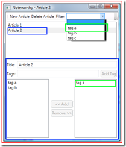

Download the source code and follow along.
The biggest challenge implementing the MVVM pattern is the View Model responding to changes in the Data Model. Usually, the View Model needs to subscribe to the PropertyChanged events fired by the Data Model, update its internal state, and then fire its own PropertyChanged events for the View. That's the hard way.
The easy way is to use Update Controls. With Update Controls, you just decorate the Data Model and wrap the View Model. The library takes care of everything in between.
Decorate a Linq to SQL data model
You decorate the data model by adding Independent sentries to every property. Whenever the property is accessed, call OnGet(). Whenever it is modified, call OnSet(). To decorate a Linq to SQL data model, we just need to inject these calls into the generated code. Unfortunately, the Linq to SQL code generator does not give you a way to easily tweak its output.
Damien Guard has solved that problem. His open source project LINQ to SQL templates for T4 is incredibly easy to set up and start using. It drops straight into Visual Studio and replaces the build-in code generator with one that you control. With just a few edits to his provided T4 template, I replaced INotifyPropertyChanged with Independent sentries.
I added a sentry for each single-valued property, and called OnGet() inside of the getter and OnSet() in the setter. I also added a sentry for each collection. They require OnGet() in the getter, and OnSet() when something is added or removed. Finally, I added a sentry per table, to take care of the top-level queries. For these, I call OnSet() on any insert, update, and delete. The final T4 template is in the example source code.
Wrap the view model for WPF
Wrapping the view model for the view is a one-liner.
public Window1()
{
InitializeComponent();
// Create a data model and a navigation model.
_blog = new Blog();
BlogNavigationModel navigationModel = new BlogNavigationModel();
// Put them both in a view model, then wrap it for the view.
this.DataContext = ForView.Wrap(new BlogViewModel(_blog, navigationModel));
}We create a view model based on the decorated data model and a similarly decorated navigation model (more on that later). Then we let Update Controls wrap it up before we give it to the view.
View model per scope
The example application -- Noteworthy -- is a blog editor. Different parts of the view focus on different granularities of data. The main view (shown in red) focuses on the blog as a whole. The article list items and detail pane (shown in blue) focus on a single article. And the tag list items (shown in green) focus on a single tag.
We define one view model class for each of these three scopes. Each one takes constructor parameters to put itself in context. So the BlogViewModel takes a Blog, the ArticleViewModel takes a Blog and an Article, and the TagViewModel takes a Blog and a Tag.
The DataContext property of a WPF control determines where it begins for data binding. If you don't set it, the control inherits it from its parent. If the control is an item in a list, then it is automatically set to an element of the ItemsSource. Finally, you can data bind to a property of its parent scope. Noteworthy uses all three techniques.
Property per control attribute
WPF data binding connects control attributes to object properties. So within each view model, we define a property for each attribute of a control. The view model exists to serve of the view, so this one-to-one mapping is to be expected. The view model is an isolation layer designed to keep these view-specific concerns out of your data model.
Navigation model per user context
The user of your application has a conceptual model of how controls should work together. Noteworthy is a single window program, so they expect all of the controls on that window to interact appropriately. If it had multiple child windows all within a parent, they would expect each window to be its own context, but participate within the context of the main window. And if it were a composite application, they would expect all of the components to work together.
Where the user draws their conceptual boundary, we create a navigation model. A navigation model records the user's point-of-view as they navigate through the application. It keeps track of their selection and temporary input.
All of the state in the navigation model is transient. Nothing is written to the database. Persistent state belongs in the data model. This keeps the view model completely stateless. The view model has only behavior, which depends upon the data model and the navigation model.
Because the navigation model is transient, we just write fields, select them, and hit Ctrl+D, G to generate the properties. For example, here's the property that records the selected article. The part that I wrote by hand is highlighted:
public class BlogNavigationModel
{
private Article _selectedArticle;
#region Independent properties
// Generated by Update Controls --------------------------------
private Independent _indSelectedArticle = new Independent();
/// <summary>
/// The article for which to display details.
/// </summary>
public Article SelectedArticle
{
get { _indSelectedArticle.OnGet(); return _selectedArticle; }
set { _indSelectedArticle.OnSet(); _selectedArticle = value; }
}
// End generated code --------------------------------
#endregion
}The properties of the navigation model are always data model types, never view model types. The view model depends upon the navigation model, not vice-versa.
Explore on your own
That's just enough to get you started. There are many interesting patterns that came together in the making of Noteworthy. Here are some that you might want to examine on your own:
- The BlogViewModel.Articles property is filtered by the selected tag.
- The article detail pane is a Grid within a Grid. The outer grid binds IsEnabled, while the inner grid binds DataContext.
- The TagListBoxStyle resource binds the ListBoxItem.IsSelected attribute to the TagViewModel.TagIsSelected property to support multiple selection.
- The Blog data model class uses a Dependent sentry to cache Tags.
- Every view model setter and command that affects the data model calls SubmitChanges.
- The ArticleViewModel.AvailableTags property uses .Except() to get all tags not assigned to the article.
- The BlogViewModel.SelectedArticle property wraps the data object from the navigation model in a view model, and then unwraps it on the way back.
- The first tag in BlogViewModel.Filters is actually not a tag at all. It is a null to represent the lack of a filter.
Expect future posts to return to this example and explore these points in more detail.

{kind=link}
Recent comments
3 years 13 weeks ago
3 years 19 weeks ago
3 years 44 weeks ago
3 years 46 weeks ago
3 years 47 weeks ago
4 years 3 days ago
4 years 3 days ago
4 years 17 weeks ago
4 years 17 weeks ago
4 years 21 weeks ago